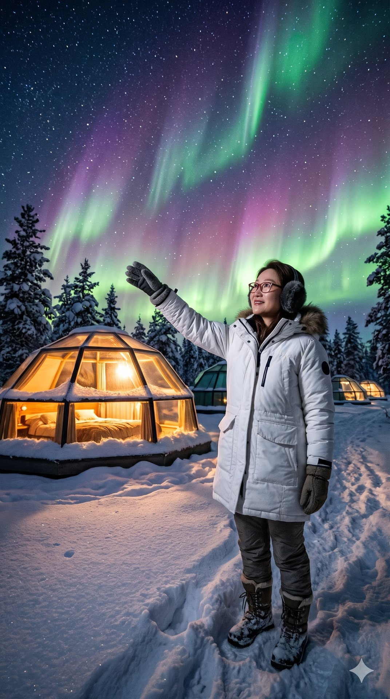

오늘의 프롬프트AI로사쌤 · 3번
오로라 아래 유리 이글루, 사진에서 영상까지
먼저 사진을 만들고, 그 사진으로 영상을 만드는 두 단계예요. 남녀 누구나 쓸 수 있어요.
1단계사진 만들기

제미나이나 챗GPT에 본인 사진을 먼저 올리고, 아래 프롬프트를 붙여넣으세요.
업로드한 사진 속 인물을 주인공으로 사용. 사진 속 인물이 여성이면 여성, 남성이면 남성으로 표현하고 얼굴은 사진 속 인물 그대로 유지. 인물이 핀란드 라플란드의 눈 덮인 언덕에서 유리 이글루 옆에 서서 밤하늘 가득 펼쳐진 초록·보라·분홍빛 오로라를 향해 한 팔을 뻗은 모습, 얼굴은 오로라 빛에 은은하게 물듦. 흰색 방한 파카와 털 귀마개, 두꺼운 방한 부츠. 배경은 내부 조명이 따뜻하게 켜진 유리 돔 이글루 여러 채, 눈이 두껍게 얹혀 둥글게 휜 가문비나무, 눈 위의 발자국, 별이 촘촘한 하늘. 광각 구도, 선명한 밤 풍경. 초고해상도 4K 실사 사진, 피부결·머리카락·파카 원단 질감·눈 결정과 오로라의 결까지 선명하게, 배경과 소품도 뭉개짐 없이 정밀 묘사, 자연스러운 손가락과 신체 비율, 이미지 안에 글자·로고·워터마크 없음, 세로 9:16.
2단계영상 만들기
1단계에서 만든 사진을 영상 도구에 첫 장면으로 올리고, 아래 프롬프트를 붙여넣으세요.
첫 프레임 이미지 속 인물의 성별, 얼굴, 의상, 배경을 끝까지 동일하게 유지. 0~4초: 오로라가 커튼처럼 물결치며 색이 초록에서 보라로 번지고 이글루 조명이 따뜻하게 빛남. 4~7초: 인물이 하늘을 따라 천천히 한 바퀴 돌며 감탄하고 입김이 퍼짐. 7~10초: 카메라를 보며 벅찬 표정으로 한국어로 말한다: "하늘이 춤추는 것 같아요, 평생 못 잊을 밤이에요." 카메라는 인물에서 시작해 하늘로 크게 틸트 업. 소리는 고요한 바람과 신비로운 분위기의 잔잔한 음악. 4K 고해상도 실사 영상, 10초 원테이크, 움직임은 물리적으로 자연스럽고 부드럽게, 얼굴과 손 변형 없음, 대사는 입 모양에 맞춰 자연스럽게, 화면에 자막·글자·로고 없음.
출처 · AI로사쌤